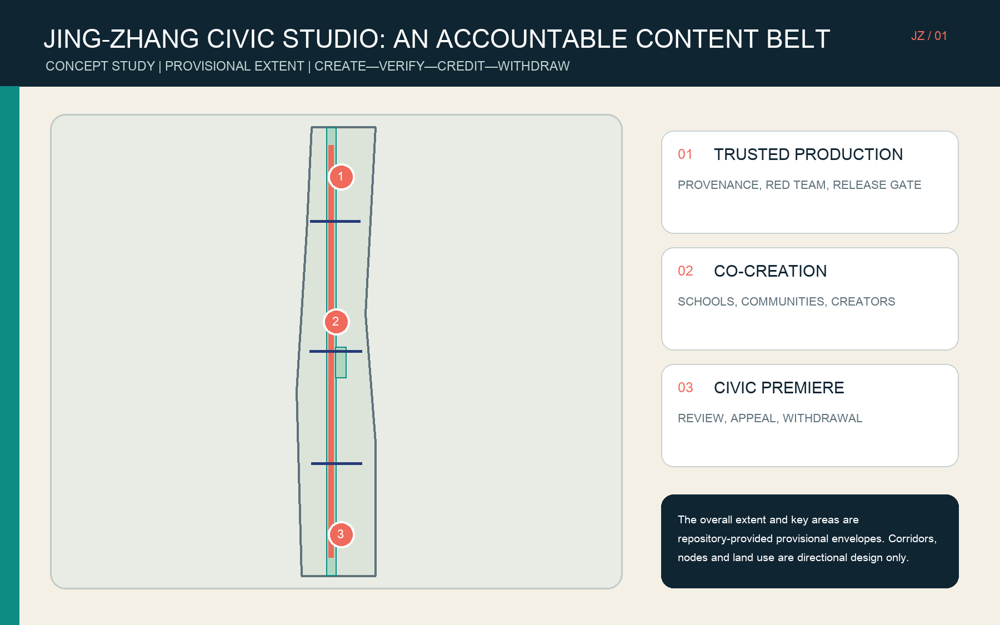
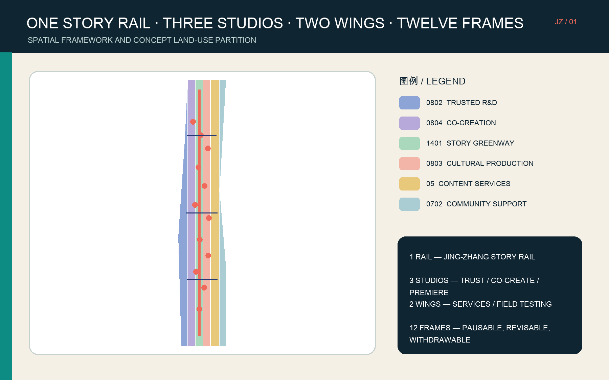
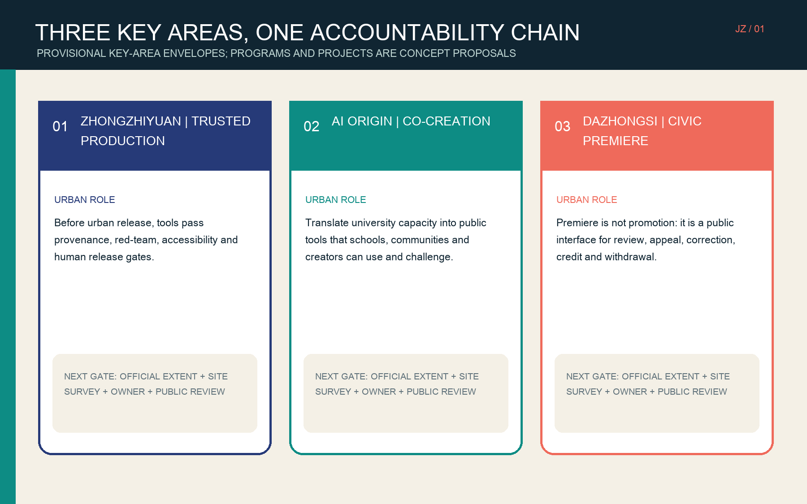
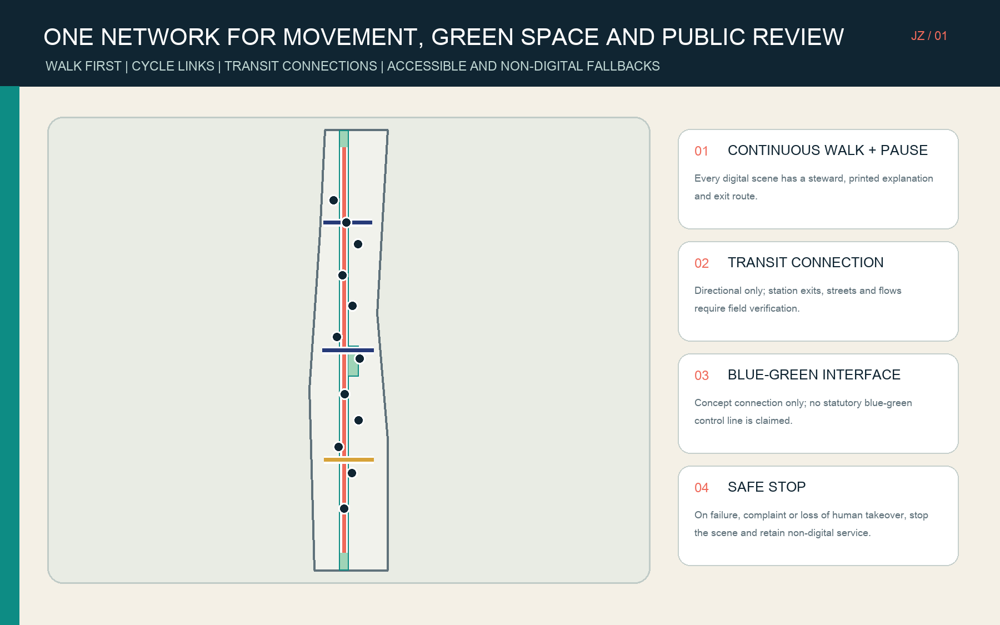
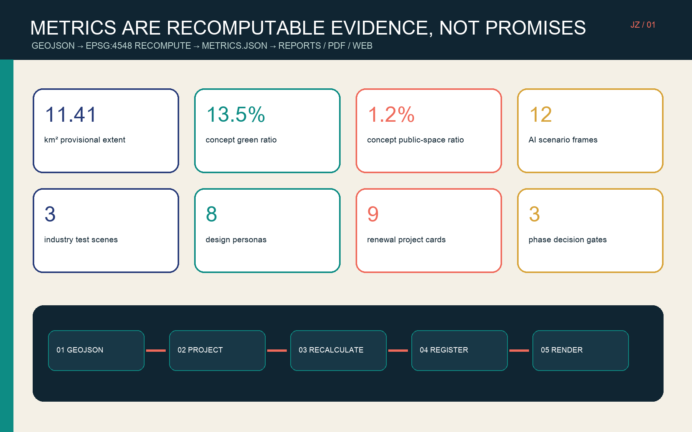

Overview Map / 总览地图
Three-Level Scope / 三层范围
Coordinated research 43.6 km² (announced) → overall design about 11.4 km² (recomputed provisional envelope) → three key areas 368.4 ha (announced total; provisional geometry).
CONCEPT ONLYPROVISIONALLand Use / 用地分区

Key Areas / 重点区域

Mobility and Blue-Green Public Space / 交通慢行 · 蓝绿公共空间

Buildings and Renewal Projects / 建筑 · 更新项目
Nine spatial typologies
Trusted testing, credentials, rights clinic, co-creation, youth imaging, public explainers, accessible media, civic premiere and creator incubation. Footprints denote program supply only; retain-renovate-demolish needs a survey.
Nine project cards, three decision gates
Start with rules and low-cost prototypes; then adapt spaces and connect districts; only then consider long-term operations and international collaboration. Every gate requires official data, owner, budget, public and professional review.
AI Scenarios / AI 场景
Provenance test | Accessibility benchmark | Media safety red team | Heritage guide | Community memory | Youth literacy | Talent service | Civic premiere | Rights clinic | Public explainer | Local stories | Low-speed device test
Every scenario specifies a human lead, data boundary, non-digital fallback, stop condition, appeal and withdrawal.
Core Metrics / 核心指标

Task Coverage / 任务覆盖
Covers the three official scopes, ecosystem, future city, renewal and key-area design, plus the agent taskbook items for identity, cases, scenarios, public nodes, cultural narrative and operations.
The structured package records 23 task responses, 6 standard responses and 15 design-depth items; figures are not the sole evidence.
Self-Check / 自检状态
Before submission, repository tools check spatial topology, metric parity, bilingual artifacts, visual safety and the professional evidence chain.
Sources / 来源
Primary basis: the Beijing planning authority announcement, repository site package and agent taskbook. BFA, C2PA, MIT Media Lab, MIT Open Documentary Lab, Ars Electronica Futurelab, ZKM, Mila and S+T+ARTS are background mechanism references only.
Assumptions / 假设
This is an offline presentation layer for a concept study. The overall extent and three key areas are repository provisional envelopes; they do not establish statutory redlines, implementation, partnerships or government commitments.
No site visit, resident interview, accessibility test or partner confirmation was conducted. Statutory controls, ownership, utilities, existing buildings and heritage controls remain missing.